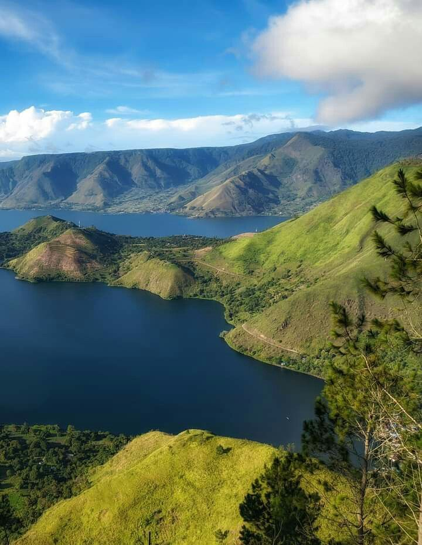

Kisah Kami
Mengangkat Keindahan Toba ke Panggung Dunia
Samosir Danau Toba adalah portal wisata digital yang hadir untuk mempromosikan potensi pariwisata kawasan Danau Toba, khususnya Pulau Samosir, kepada wisatawan lokal maupun internasional.
Danau Toba merupakan danau vulkanik terbesar di dunia dan Pulau Samosir adalah pulau di dalam danau yang penuh dengan kekayaan budaya Batak Toba. Website ini hadir sebagai jembatan antara wisatawan dan destinasi yang belum banyak diketahui dunia.
Kami percaya bahwa pariwisata yang baik harus memberikan manfaat nyata bagi masyarakat lokal sambil menjaga kelestarian alam dan budaya. Setiap konten di website ini dibuat dengan semangat mencintai dan melestarikan warisan leluhur Batak Toba.


Pilar Kami
Visi, Misi & Nilai
Visi Kami
Menjadi portal wisata terdepan di Sumatera Utara yang membantu mempromosikan pariwisata berkelanjutan di kawasan kaldera Danau Toba.
Misi Kami
Memperkenalkan kekayaan budaya dan alam Batak Toba kepada wisatawan lokal dan mancanegara melalui platform digital yang informatif dan interaktif.
Nilai Kami
Menghormati budaya lokal, mendukung masyarakat Batak, dan mendorong pariwisata yang bertanggung jawab terhadap lingkungan dan kearifan lokal.
Komitmen Kami
Jangkauan Global
Menghadirkan pesona Samosir agar dapat diakses oleh wisatawan dari seluruh dunia.
Komunitas Lokal
Mendukung pertumbuhan UMKM, pengerajin, dan pelaku desa wisata lokal Samosir.
Pariwisata Hijau
Mendorong praktik pariwisata berkelanjutan yang menjaga kelestarian lingkungan.
HORAS!
"Salam persaudaraan Batak Toba untuk seluruh dunia. Mari bersama-sama menjaga, melestarikan, dan memperkenalkan keajaiban alam Danau Toba kepada generasi yang akan datang."
— CilaTeam untuk Batak Toba —